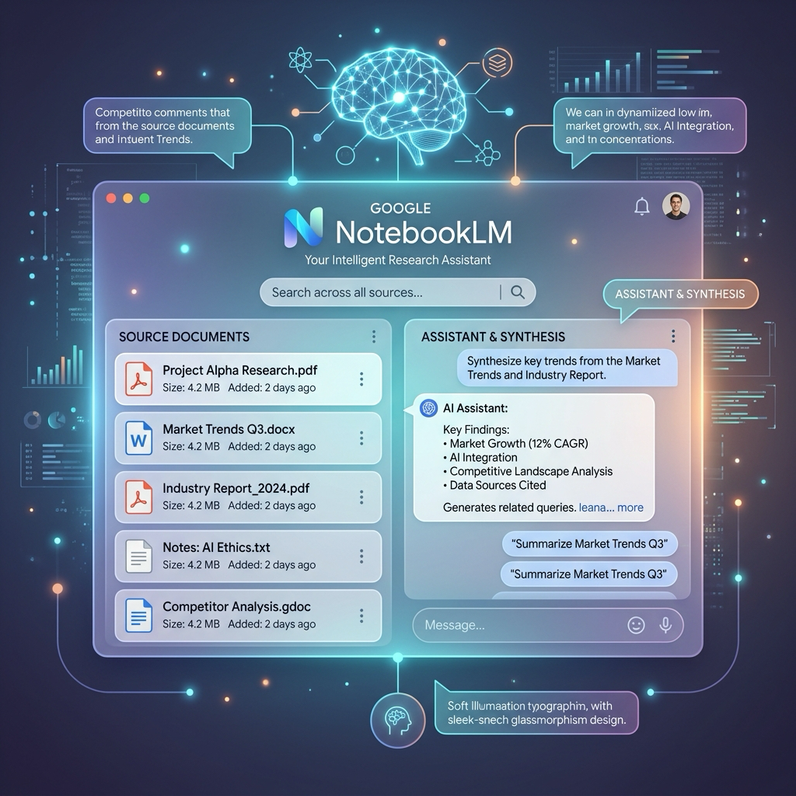
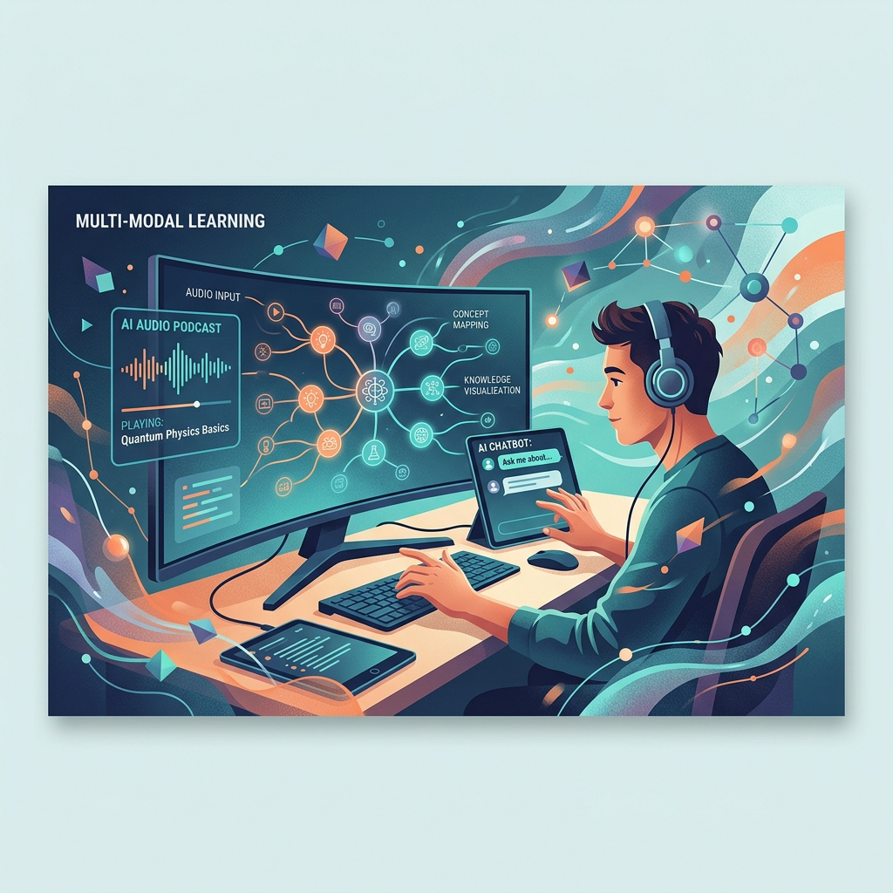

수많은 정보가 쏟아지는 시대, 여러분은 신뢰할 수 있는 진짜 지식을 어떻게 선별하고 학습하고 계시나요? 혹시 유용하다고 소문난 보고서나 책을 수집하는 데만 시간을 다 보내고, 정작 핵심은 읽지 못한 채 정보 피로감만 느끼고 계시진 않나요?
구글의 개인화 AI 연구 도구인 NotebookLM이 이러한 문제를 완벽하게 해결해 줄 매력적인 신기능을 선보였습니다. 바로 전문가와 신뢰도 높은 기관들이 엄선한 자료 세트를 즉시 활용해 볼 수 있는 ‘Featured Notebooks(추천 노트북)’ 기능입니다. 이제 클릭 한 번으로 고품질의 지식 저장소에 접속하여 능동적인 학습을 시작할 수 있습니다. 이번 글에서는 이 기능의 주요 특징과 구체적인 활용법을 알아보겠습니다.

📌 핵심 요약: Featured Notebooks의 3가지 핵심 포인트
- 검증된 고품질 소스의 즉각적인 활용: 구글과 협력한 저자, 언론사, 연구원들이 직접 엄선한 자료 세트를 바탕으로, 정보 수집 단계를 건너뛰고 신뢰도 높은 정보 환경에서 즉시 연구를 시작할 수 있습니다.
- Read-Only 특성과 스마트한 우회 편집: 추천 노트북은 원본 소스를 편집할 수 없는 읽기 전용 상태로 제공되지만, ’Export to Docs(Google 문서로 내보내기)’나 소스 수동 재구축을 통해 자신만의 맞춤형 버전으로 변형하여 사용할 수 있습니다.
- 입체적 학습(Deep Learning)을 돕는 인지 모델: AI 팟캐스트(Audio Overviews), 마인드맵, 챗봇 대화 등을 유기적으로 조합하여 복잡한 지식을 빠르고 입체적으로 내재화하는 훌륭한 학습 경로를 제공합니다.
🔍 상세 설명: 어떻게 활용하고, 무엇이 다를까?
1. 클릭 한 번으로 만나는 검증된 큐레이션 소스
과거에는 NotebookLM을 쓰기 위해 개인이 직접 PDF를 찾고 웹 링크를 긁어모아야 했습니다. 하지만 이제는 잘 정제된 고품질 지식 저장소가 준비되어 있습니다. 구글은 신뢰받는 파트너사들과 손을 잡고 다음과 같은 다양한 주제의 노트북을 기본 탑재했습니다. * 건강/의학: 에릭 탑(Eric Topol) 박사의 건강 및 수명에 관한 조언 (Super Agers) * 트렌드/예측: The Economist의 2025년 글로벌 예측 분석, Our World In Data의 인류 웰빙 트렌드 * 문학/교양: 윌리엄 셰익스피어 전집 (The Complete Works of William Shakespeare) * 실용/비즈니스: 글로벌 기업들의 Q1 실적 트래커, Arthur C. Brooks의 The Atlantic 칼럼 기반 인생 조언
이처럼 사용자는 준비된 텍스트 속에서 NotebookLM의 지능형 요약 및 질의응답 기능이 얼마나 정교하게 작동하는지 즉각 테스트해 볼 수 있습니다. (참고 자료: Google Blog - NotebookLM Update (December 2024))
2. 안전한 Read-Only 템플릿과 우회 편집 팁
Featured Notebooks는 여러 사용자가 공용으로 탐색하는 전시품과 같기 때문에, 사용자가 원본 소스를 직접 삭제하거나 구조를 편집하는 것은 불가능한 읽기 전용(Read-only) 상태입니다.
자신만의 맞춤형 연구 노트북으로 발전시키고 싶다면 다음의 팁을 활용해 보세요. * Google 문서로 내보내기(Export to Docs): 추천 노트북을 학습하면서 생성한 AI 요약 노트나 아이디어 카드는 우측 상단 메뉴의 ’Export to Docs’를 통해 즉시 Google 문서로 내보내 편집 및 소장이 가능합니다. * 수동 재구축: 추천 노트북에 포함된 핵심 출처 링크나 제목을 복사하여, 나의 개인 대시보드에 새 노트북을 생성하고 업로드하면 편집 권한이 온전히 부여된 나만의 노트북을 만들 수 있습니다. (참고 자료: Reddit NotebookLM Community Discussion)
3. 오디오와 챗봇을 통한 입체적인 ‘인지 학습 모델’
학습 기술 전문가들은 이번 Featured Notebooks의 등장이 단순한 샘플 추가 이상의 가치가 있다고 말합니다. NotebookLM의 다채로운 생성 도구들을 조합하여 가장 효과적인 학습 경로를 보여주는 ‘인지 학습 모델(cognitive models)’ 역할을 하기 때문입니다.
전문가들이 추천하는 3단계 딥 러닝 전략은 다음과 같습니다. 1. 1단계 (독자 이해): 추천 노트북에 제공된 고품질 원본 소스 문서들을 먼저 꼼꼼히 읽어보며 스스로 맥락을 정리합니다. 2. 2단계 (맥락 재구성): NotebookLM의 Audio Overviews(AI 생성 팟캐스트)를 활성화하여, 두 명의 AI 호스트가 대화식으로 정리해 주는 대화형 오디오를 들으며 중요한 논점을 귀로 학습합니다. 3. 3단계 (자가 검증): AI 챗봇에 학습 도중 생긴 의문점을 질문하거나 자가 테스트(Self-testing) 질문을 만들어 달라고 요청하여 내가 제대로 이해했는지 능동적으로 검증합니다. (참고 자료: Ditch That Textbook - NotebookLM Guides & Medium - Deep Learning with NotebookLM)

💡 마무리: 지식 공유와 AI 학습의 미래 전망
NotebookLM의 Featured Notebooks 기능은 단순히 유용한 기능의 추가를 넘어, 우리가 외부의 방대한 전문 지식을 인공지능을 매개로 어떻게 빠르고 완벽하게 습득할 수 있는지 그 미래 지표를 보여줍니다.
앞으로 신뢰도 높은 대학, 연구소, 혹은 기업들이 자신들의 방대한 지식 아카이브를 이러한 ‘추천 노트북’ 형태로 대중에게 배포하고, 사용자들은 이를 개인 맞춤형 AI 비서와 상호작용하며 학습하는 ‘지식 유통의 민주화’가 가속화될 것입니다. 정보의 양에 압도당하기보다, 정제된 지식의 바다에 뛰어들어 AI와 함께 한 단계 깊은 통찰력을 길러보는 것은 어떨까요? 지금 바로 NotebookLM에 접속하여 첫 번째 추천 노트북을 열어보세요!